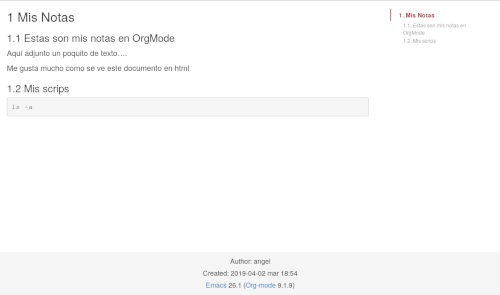
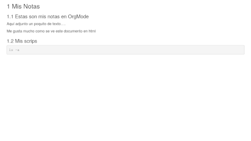

Exportando bonito a html mi OrgMode y creando web estática
Emacs es espectacular, pero los usuarios que lo utilizan y crean paquetes, están al mismo nivel. Hoy os traigo un paquete que está disponible en los repositorios de Melpa desarrollado por Brandon van Beekum, que exporta tus archivos orgmode a formato html de un modo más bonito y con más calidad.
Por defecto emacs, exporta a html pero de un modo plano, osea código html puro y duro, necesitamos una plantilla css para que tenga formato y se vea mas bonito. Este paquete es como si llevara una plantilla css y javascript adjunta, creando la tabla de contenido del documento en la parte superior derecha, si utilizamos la versión de escritorio y en la parte inferior, si utilizamos un móvil. Esta tabla de contenido se va expandiendo conforme navegamos por nuestro orgmode en versión web.

En la configuración, adjunto un ejemplo de como tener tus archivos orgmode en una carpeta y exportar los html a otra. Esto es interesante porque podríamos apuntar a esa carpeta como raíz de un servidor web, por ejemplo siguiendo el post del Docker de Nginx, haciendo accesible estas notas en formato web en nuestra red Local o via Internet.
Otra posibilidad sería publicarlo en las GitHub o GitLab Pages.
Instalación
M-x package-install [RET] ox-twbs [RET]
Para exportar el archivo que estamos editando de orgmode a html con este paquete, ejecutaremos el siguiente comando en emacs:
M-x org-twbs-export-to-html
El archivo html resultante, estará en la misma carpeta donde está el archivo orgmode.
Configuración
Vamos a ver como exportar los html a otra carpeta que no sea la misma donde está el archivo orgmode. Copiaremos en nuestro archivo de configuración de emacs init.el o .emacs:
(setq org-publish-project-alist
'(("org-notes"
:base-directory "~/org/"
:publishing-directory "~/public_html/"
:publishing-function org-twbs-publish-to-html
:with-sub-superscript nil
)))
En este archivo de configuración, utilizaremos las carpetas ~/org/ y ~/public_html/. Los archivos orgmode los guardaremos en la carpeta ~/org/ y cuando ejecutemos el comando dentro de emacs: M-x org-publish-all , será exportado en formato .html a la carpeta ~/public_html/.
Previamente, crearemos las carpetas desde nuestra terminal:
mkdir -p carpeta ~/org ~/public_html
Podemos personalizar la carpeta que deseemos, modificando la ruta de las carpetas en el archivo de configuración.
Sin tabla de contenido o índice, autor…
Si no queremos que aparezca tabla de contenido o índice, ni a pie de página el autor, fecha… añadiremos al inicio de nuestro OrgMode:

#+OPTIONS: html-postamble:nil toc:nil
Cajetilla de código de color
Si queremos que salga la cajetilla de código de color negro, en el archivo orgmode añadiremos la siguiente línea. Como todo, es personalizable cambiando el color al que tu desees.
#+HTML_HEAD_EXTRA: <style>pre { font-size: 13px; background-color: #000; color: #bbb; }</style>
Conclusión
En el repositorio de GitHub de ox-twbs encontraras más información de este paquete. Encuentro que es un modo muy sencillo de tomar tus notas y acceder a ellas para consultar.
Fuentes
- Fuente del paquete: https://github.com/marsmining/ox-twbs
- http://clubctrl.com/org/prog/howto.html
- http://clubctrl.com/org/prog/source.html
Publicado por Angel el martes 02 abril del 2019
También te puede interesar:
- Notificaciones Org Mode en Telegram con mi Bot
- Actualizado: Cursos, Webs, Grupos, Tutoriales… Todo sobre Emacs y OrgMode
- Simplenote en Emacs
- 2 Archivos de configuración, un Emacs
- OrgMode: Buscar solo en las Cabeceras
- Lee Super rápido en Emacs con Spray
- Con Emacs también podemos editar Markdown
- Kde Connect en Emacs
- Convertir de Markdown a Org Mode gracias a Pandoc
Powered by org-bash-blog
Writing in orgmode whith emacs

Este obra está bajo una licencia de Creative Commons Reconocimiento-NoComercial-CompartirIgual 4.0 Internacional.